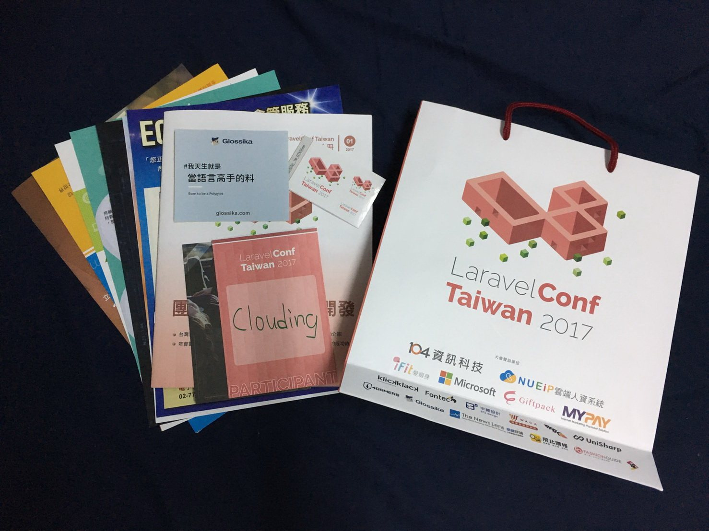

Laravel Conf 2017 分享
Posted

在某一次線上讀書會，Laravel 傳教士范聖佑分享的 - 就此愛上 PhpStorm — 以 Laravel 開發為例，聽到了今年將要舉辦的 Laravel Conf 2017 第一屆，迫不及待第一天開賣就衝了一波盲鳥票 其實是很窮為了省錢，就展開了這次的旅途，收穫真的很多。
議程
整理一下這次議程和相關簡報。
| 11F | 10F |
|---|---|
| 從快速成長的新創企業發展角度談 iFit x ECFIT 導入開發框架 Laravel 時的思維與歷程莊秉憲 (Lenny) 艾絲資訊股份有限公司 資訊長 | Laravel Storage X GCS 跨平台應用 劉宇烝 (James) 上癮科技 總工程師 |
| Laravel 單頁面應用與前後端分離開發陳俊仁 (Maras) 4Gamers 後端工程師 | Eloquent 資料庫層核心解構，讓 Laravel 支援更多資料庫陳佑竹 (Mouson) 世成科技 資深系統分析師 |
| Laravel 事件及序列功能應用顏永富 (Fripig) 上癮科技 工程師 | 實戰 TDD：實作訂單狀態陳昱廷 (Yun) LnB信用市集 WEB程式打雜工 |
| 面對高流量- Laravel 的大流量策略謝旻樺 (Randy) 關鍵評論網 IT/UI Director | 水平擴展PHP應用程序 - 使用 Maghead 資料庫框架林佑安 (c9s) x 蔡佳良 (Recca) |
| 運用 Docker 整合 Laravel 提升團隊開發效率吳柏毅 (appleboy) | Continuous Delivery：敏捷開發的最後一哩路周建毅 (Miles) 一零四資訊科技 |
| 打造 Laravel 優美架構 - 談可維護性與彈性設計賴逸軒 (Yish) | KKBOX 的團隊協作方式廖淮昌 (CQD) KKBOX 軟體架構設計部副理 |
共筆
心得
交通
交通來說很方便，在台北火車站附近，步行至最近的捷運站也不用三分鐘。
空間
這次活動採雙軌進行，每個時段都是二選一，11F空間座位比較大也有小桌子可以放筆電，10F空間座位比較小。
一開使有擔心會不會猛個議程人數多到爆炸，要用站的或席地而坐，感覺得出來這邊有用心解決這個問題，就算全部擠在同一個地方，不至於到人數過多沒座位，會前也有問卷詢問大家有興趣的議程來分配每場的時間和空間。
吃
-
午餐: 動線還不錯，沒有到很亂，大家依序排隊領便當，到 B1 去吃便當，空間也很大。
-
下午茶: 顯得有些亂，有些人從另一邊排隊，有些人從中間過去，其實我也搞不太懂要從哪走，然後空間有點小，都被大量人群埋沒，隨便夾個幾個吃一吃就趕快逃走了。
議程選擇
面對高流量- Laravel 的大流量策略
提到了新創公司從一開始到現在如何面對慢慢增大的流量，有時候受限於金錢、人力、時間的關西，選擇了好的方式也可以巧妙地解決許多問題，來省下更多資源來補充其他地方。
還有從 Ruby 轉到 Laravel 的原因，並不是因為哪個比較好，而是哪邊社群最廣最多人可以討論分享，才是最好的選擇。
運用 Docker 整合 Laravel 提升團隊開發效率
這就是常常 google 都會連到的小惡魔網站 AppleBoy，第一次看到本人，照片幾乎都是跟女兒的合照，以為是會是中年大叔，沒想到本人有點壯又帥。
OK 題外話，Docker 自己有自學一段時間，也想了解團隊合作之間的使用方式。
期間提到了 Homestead 一些使用上的問題，包括時間、溝通、測試、佈署、除錯，還有導入 Docker 後讓各個職位的人不用互相等待，自己就可以做測試或 demo，節省主機開銷，也解決了開發環境不同的問題。
得知了 Drone CI/CD 這一套工具，這可能就是參加 conference 的好處吧。
KKBOX 的團隊協作方式
一直對 KKBOX 很感興趣，不外乎上網路上大澤木小鐵、閃亮亮分享的資源真的收穫很多，這場也讓我印象深刻。
用自動化的方式減少人力成本，issue tracker 來記錄做的事情，Gitlab 自動佈署測試，類似 Github PR 進 master 之前 code review，發 issue 的人決定是否完成。
使用了修改版的 Git flow，常常 push，rebase -i 整理 commit。
溝通上用 Slack 軟體，不同類型的訊息在不同 channel。
Coding style 採用 PSRs，framework 選最多人使用的 Laravel。
有人自動測試讓大家比較敢去改code，而不會綁手綁腳。
用了這些方式取代掉了每日的工作日誌，也很容易追朔、解決問題。
結論
這次議程主題圍繞在團隊合作與高效率開發，了解到不一樣性質的公司之間的團隊合作，和為什麼使用 Laravel 的原因，從新創到營運很久的公司都有。他們是如何處理調配大家的工作，如何分工合作統整一堆不同工程師的聲音。
並沒有什麼框架是最好的，不過可以選擇社群最多的，討論度最豐富的，也了解到人脈和社群的重要性。
時間上來說有些許趕，每堂課程40分鐘，速度也很快，有時候筆記都來不及寫完就下一頁了，會上也有說到是用提供關鍵字的方式，讓大家會後可以再去複習。
時代一直在變，技術也不停在進步，起許自己能一直保有對程式的熱誠，不斷精進向前，也感謝聖佑大突破一切開了第一場 Laravel Conf，期待明年 Laravel Conf 2018。
